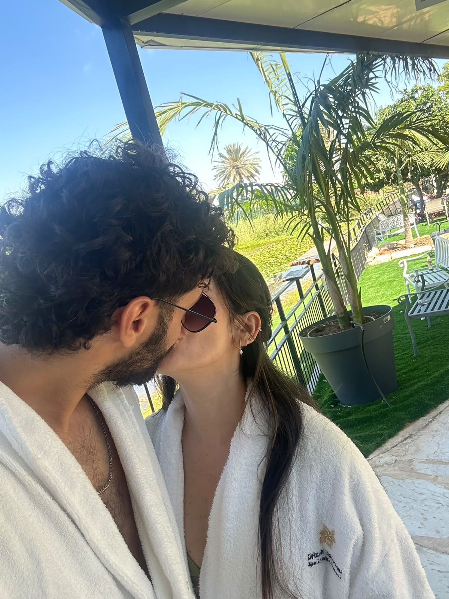

משפט פתיחה
ההרפתקה שלנו
-- מקום לעדכון: תעשו את זה בעצמכם, תוסיפו כאן משפט אישי ומרגש משלכם שיפתח את הדף. --
עד אז: איטליה מחכה לנו — עם היין, הים, הרחובות הישנים, ואינספור פעמים שנגיד "בואי נעצור רגע, זה יפה מדי".

משפט פתיחה
-- מקום לעדכון: תעשו את זה בעצמכם, תוסיפו כאן משפט אישי ומרגש משלכם שיפתח את הדף. --
עד אז: איטליה מחכה לנו — עם היין, הים, הרחובות הישנים, ואינספור פעמים שנגיד "בואי נעצור רגע, זה יפה מדי".
יום אחר יום
כל התכנון שלנו — טיסות, רכבות, לינות ורגעים שמחכים לקרות
בלי לקחת יותר מדי ברצינות
הבדיחות הפנימיות שלנו, עכשיו עם ספירה רשמית
ספירה רשמית, בלי לשאול יותר מדי שאלות.
נאפולי, זו לא שאלה של אם — זו שאלה של כמה.
הסמטאות בפוזיטנו יפות. גם תלולות.
כל יום בטיול, דרגו מ-1 עד 5 לב כמה הוא היה רומנטי.
אמת או חובה, בגרסה שלנו
פותחים אחת ביום, או כשמתחשק. כל קופסה נשארת פתוחה אצלכם לזיכרון
המסלול שלנו
תשעה לילות דרך שלושה חופים ושתי ערים
לפני שיוצאים
מקומות שכבר יודעים עליהם, וכאלה שמחכים לעדכון
-- מקום לעדכון: תעשו את זה בעצמכם, תוסיפו כאן שמות של מסעדות שתרצו לשריין או שממליצים עליהן. --